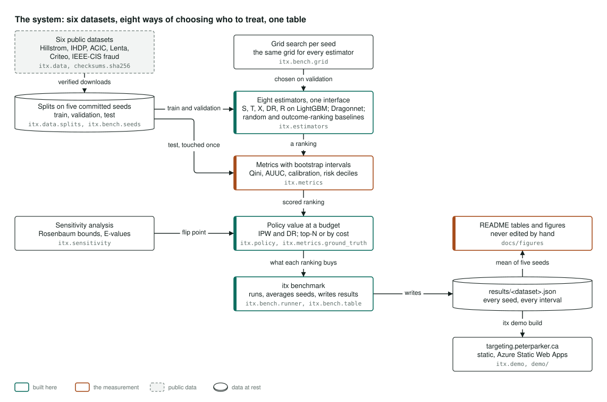
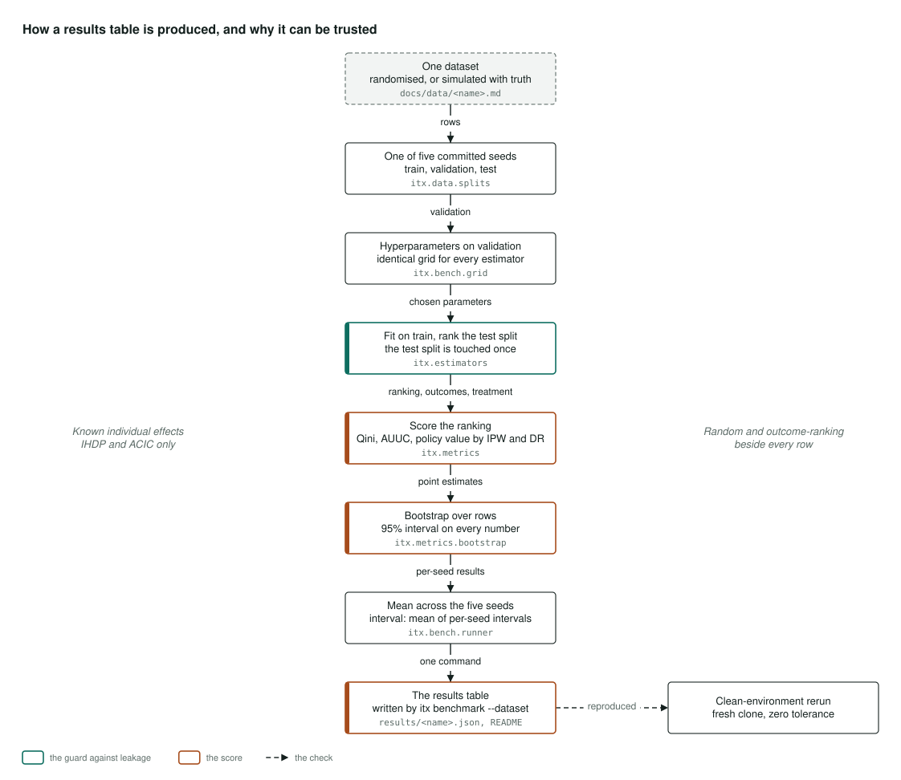
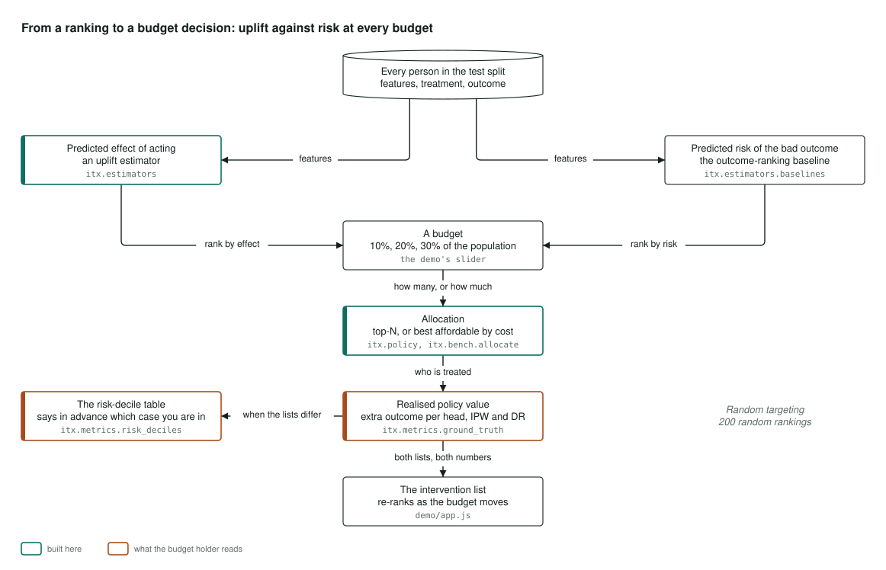

Architecture
How it's built
How the project is put together, in three pictures: the whole system, how one results table gets made, and how the demo turns a ranking into a budget decision. Select a diagram to open it full size.
The system

Everything starts with six public datasets. Each one is downloaded, checked against a recorded checksum so you know you have exactly the file the results came from, and split into training, validation and test sets on five fixed seeds, so anyone who reruns it gets the same rows.
Eight ways of choosing who to treat then compete on equal terms. Five are uplift models, the S, T, X, DR and R learners, all built on the same LightGBM base. One is Dragonnet, a neural network. Two are baselines: picking at random, and ranking people by risk, which is what most teams do today. All eight go through the same interface and the same tuning grid, so none of them gets an unfair advantage.
Each ranking is scored on the held-out test set, with a 95% interval on every number. The policy layer then answers the question a manager actually asks: if you can only afford to treat a tenth of the people, who goes on the list, and what does that list buy? A sensitivity check asks how strong a hidden factor would have to be before that answer changes.
One command, itx benchmark, runs the whole thing and writes a results file
per dataset. The README tables, the figures and this demo are all generated from those
files. None of them is typed by hand.
Where it lives: itx.data, itx.estimators,
itx.metrics, itx.policy, itx.sensitivity,
itx.bench and itx.demo.
How a results table is produced

A results table is only worth something if you can rebuild it yourself and get the same numbers. This is how each one is made.
The datasets come in two kinds. Some are randomised experiments, where a coin flip decided who was treated, so group averages can be trusted. The other two, IHDP and ACIC, are simulated with a known effect for every person, so you can check how close a model gets for each individual and not just on average.
For each of the five seeds, the data is split, each method's settings are chosen on the validation set, the model is trained, and then it ranks the test set. The test set is used exactly once. The ranking is scored on Qini, on AUUC and on the value a budget would buy, measured two independent ways, always beside the two baselines, and every number gets a bootstrap interval.
The five seeds are then averaged and the table is written by one command. As a final check, everything was rerun from a fresh copy of the repository in a clean environment, and every table came back identical. That rerun earned its keep: it caught a loading bug that had made five published rows impossible for anyone else to reproduce.
Where it lives: itx.bench.runner, itx.bench.table and
itx.metrics.bootstrap.
From a ranking to a budget decision

This is what the budget slider does.
Every person in the test set gets two scores: how much acting is predicted to help them, from an uplift model, and how likely they are to have the bad outcome anyway, from the risk baseline. Choose a budget, say 10, 20 or 30 percent of people, and the top of each list is treated. When every intervention costs the same, that is simply the top of the list. When costs differ, it is the best set you can afford.
What each list buys is measured as the extra good outcomes per person in the whole population, against 200 random lists. That is the number the slider moves.
One cheap check tells you in advance whether ranking by risk is a trap on your data: the risk-decile table, which needs a single model. On ACIC, ranking by risk was ten times worse than random. On Criteo it matched every uplift model. Same code, opposite answers, which is why the check is worth running first.
Where it lives: itx.policy.cost_aware, itx.bench.allocate,
itx.metrics.ground_truth and itx.metrics.risk_deciles.